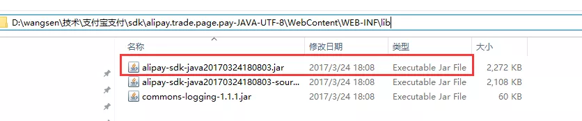
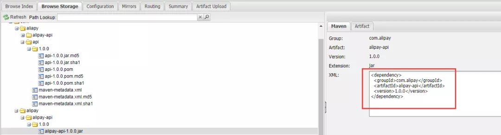
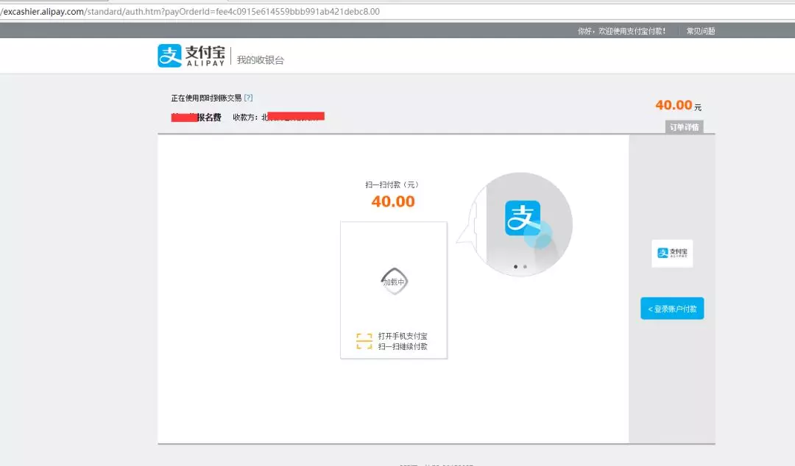

最近在做支付宝的接口对接，之前做过一个版本，但是由于申请了新的账号以前旧的的接口对接就不能使用了
所以就开始对接新的版本接口对接，在这里也记录一下让那些还没有对接的兄弟少走点弯路。
先申请一个企业账户
https://memberprod.alipay.com/account/reg/enterpriseIndex.htm
去支付宝的开放平台
https://open.alipay.com/platform/home.htm
添加应用：
https://docs.open.alipay.com/200/105310
按照这个链接的文档一步一步操作；
账号准备好之后，就可以了解相关的接口了，以（即时到账）支付接口为例。
https://docs.open.alipay.com/270/alipay.trade.page.pay/
https://docs.open.alipay.com/54/103419
选择java版本
sdk中有一个jar包

将这个jar包上传到私服上去。
http://blog.csdn.net/huchunlinnk/article/details/17789175
这里的gav的写法取决于你上传私服的时候的填写

<dependency>
<groupId>com.alipay</groupId>
<artifactId>alipay-api</artifactId>
<version>1.0.0</version>
</dependency>取消AlipayConfig配置文件中的部分常量
打开下载sdk应该可以找到
将这个类中的前几个静态常量变成非静态的，以便可以支持多个配置对象。
/* *
*类名：AlipayConfig
*功能：基础配置类
*详细：设置帐户有关信息及返回路径
*修改日期：2017-04-05
*说明：
*以下代码只是为了方便商户测试而提供的样例代码，商户可以根据自己网站的需要，按照技术文档编写,并非一定要使用该代码。
*该代码仅供学习和研究支付宝接口使用，只是提供一个参考。
*/
@Data
public class AlipayConfig {
//↓↓↓↓↓↓↓↓↓↓请在这里配置您的基本信息↓↓↓↓↓↓↓↓↓↓↓↓↓↓↓
// 应用ID,您的APPID，收款账号既是您的APPID对应支付宝账号
public String app_id = "";
// 商户私钥，您的PKCS8格式RSA2私钥
public String merchant_private_key = "";
// 支付宝公钥,查看地址：https://openhome.alipay.com/platform/keyManage.htm 对应APPID下的支付宝公钥。
public String alipay_public_key = "";
// 服务器异步通知页面路径 需http://格式的完整路径，不能加?id=123这类自定义参数，必须外网可以正常访问
public String notify_url = "";
// 页面跳转同步通知页面路径 需http://格式的完整路径，不能加?id=123这类自定义参数，必须外网可以正常访问
public String return_url = "";
// 签名方式
public static String sign_type = "RSA2";
// 字符编码格式
public static String charset = "utf-8";
// 支付宝网关
public static String gatewayUrl = "https://openapi.alipay.com/gateway.do";
//日志路径
public static String log_path = "C:\\";
}后端向支付宝发起支付的请求，在这个同时需要传递必要参数，下面我们就来编写如何向支付宝发起支付。
/**
* 阿里支付控制器
*
* @author ChenHao
* @Date 2017年8月16日
*/
@Controller
@RequestMapping("/alipay")
public class AliPayController {
@Autowired
private AlipayViewService alipayViewService;
/**
* 跳转到去支付的jsp页面
*
* @param orderId 订单号
*
* @param payAccountType 支付账号类型
*
* @param model 模型
*
* @throws Exception
*/
@RequestMapping
public void gotopay(long orderId, Model model) throws Exception {
alipayViewService.setGoToPayInfo(orderId, model);
}
}/**
* 阿里支付页面服务类
*
* @author ChenHao
* @Date 2017年8月16日
*/
@Service
public class AlipayViewService {
@Autowired
private NewAlipayBusinessService newAlipayBusinessService;
/**
* 设置去支付信息
*
* @param orderId 订单id
* @param model 模型
* @param payAccountType 支付账号类型
*
* @return 构建的字符串
*/
public void setGoToPayInfo(long orderId, Model model) throws Exception {
model.addAttribute("htmlStr", newAlipayBusinessService.buildPayRequest(orderId, payPrice, "报名费", "略"));
}
}/**
* 新的阿里支付页面服务类
* <p>
* 阿里升级接口之后使用这个服务类
*
* @author ChenHao
* @Date 2017年8月16日
*/
@Data
public class NewAlipayBusinessService {
/**
* 阿里的配置文件对象
*/
private AlipayConfig alipayConfig;
/**
* 构建支付请求
*
* @param orderId 订单号
* @param payPrice 付款金额
* @param orderName 订单名称
* @param body 商品描述
*
* @return html字符串
*/
public String buildPayRequest(long orderId, long payPrice, String orderName, String body) throws Exception {
//获得初始化的AlipayClient
AlipayClient alipayClient = getAlipayClient();
//设置请求参数
String bizContent = getBizContent(ConvertUtil.obj2str(orderId), AmountUtils.changeF2Y(payPrice), orderName,
body);
return alipayClient.pageExecute(setAlipayRequestParameters(bizContent)).getBody();
}
/**
* 设置阿里支付请求参数
*
* @param bizContent 包含关键参数的json字符串
*
* @return AlipayTradePagePayRequest对象
*/
private AlipayTradePagePayRequest setAlipayRequestParameters(String bizContent) {
AlipayTradePagePayRequest alipayRequest = new AlipayTradePagePayRequest();
alipayRequest.setReturnUrl(alipayConfig.getReturn_url());
alipayRequest.setNotifyUrl(alipayConfig.getNotify_url());
alipayRequest.setBizContent(bizContent);
return alipayRequest;
}
private AlipayClient getAlipayClient() {
AlipayClient alipayClient = new DefaultAlipayClient(AlipayConfig.gatewayUrl, alipayConfig.getApp_id(),
alipayConfig.getMerchant_private_key(), "json", AlipayConfig.charset,
alipayConfig.getAlipay_public_key(), AlipayConfig.sign_type);
return alipayClient;
}
/**
* 获取业务的关键内容
*
* @param out_trade_no 订单号
* @param total_amount 付款金额
* @param subject 订单名称
* @param body 商品描述
*
* @return 拼接之后的json字符串
*/
private String getBizContent(String out_trade_no, String total_amount, String subject, String body) {
ExceptionUtil.checkEmpty(out_trade_no, "订单号不能为空");
ExceptionUtil.checkEmpty(total_amount, "价格不能为空");
ExceptionUtil.checkEmpty(subject, "订单名称不能为空");
ExceptionUtil.checkEmpty(body, "商品描述不能为空");
StringBuffer sb = new StringBuffer();
sb.append("{");
sb.append("\"out_trade_no\":\"").append(out_trade_no).append("\",");
sb.append("\"total_amount\":\"").append(total_amount).append("\",");
sb.append("\"subject\":\"").append(subject).append("\",");
sb.append("\"body\":\"").append(body).append("\",");
sb.append("\"product_code\":\"FAST_INSTANT_TRADE_PAY\"");
sb.append("}");
return sb.toString();
}
}<?xml version="1.0" encoding="UTF-8"?>
<beans xmlns="http://www.springframework.org/schema/beans" xmlns:xsi="http://www.w3.org/2001/XMLSchema-instance"
xmlns:context="http://www.springframework.org/schema/context" xmlns:mvc="http://www.springframework.org/schema/mvc"
xsi:schemaLocation="http://www.springframework.org/schema/beans http://www.springframework.org/schema/beans/spring-beans-4.1.xsd
http://www.springframework.org/schema/context http://www.springframework.org/schema/context/spring-context-4.1.xsd
http://www.springframework.org/schema/mvc http://www.springframework.org/schema/mvc/spring-mvc-4.1.xsd">
<!-- 数理化支付配置对象 -->
<bean id="alipayConfig" class="com.we.business.pay.newalipay.config.AlipayConfig">
<property name="app_id" value="你的appId"/>
<property name="merchant_private_key" value="你的私钥"/>
<property name="alipay_public_key" value="支付宝公钥"/>
<property name="notify_url" value="支付完成的异步通知地址"/>
<property name="return_url" value="支付完成跳转的地址"/>
</bean>
<!-- 阿里支付业务服务类 -->
<bean id="newAlipayBusinessService" class="com.we.business.pay.service.NewAlipayBusinessService">
<property name="alipayConfig" ref="alipayConfig"/>
</bean>
</beans> <%@page import="com.we.core.common.util.DateTimeUtil"%>
<%@ page language="java" contentType="text/html; charset=UTF-8" pageEncoding="UTF-8"%>
<!DOCTYPE HTML PUBLIC "-//W3C//DTD HTML 4.01 Transitional//EN">
<html>
<head>
<meta http-equiv="Content-Type" content="text/html; charset=UTF-8">
<title>支付宝即时到账交易接口</title>
</head>
${htmlStr }
<body>
</body>
</html>页面访问：
localhost:8091/alipay/gotopay.json?orderId=232323
就可以看到支付页面了；

用户支付完成之后支付宝会通过你配置的的notify_url的值进行回调，
我需要编写这个逻辑，以完成整个的支付流程。
/**
* 阿里支付控制器
*
* @author ChenHao
* @Date 2017年8月16日
*/
@Controller
@RequestMapping("/alipay")
public class AliPayController {
@Autowired
private AlipayViewService alipayViewService;
/**
* 支付完成
*/
@Void
@NotSso
@ResponseBody
@RequestMapping
public void payFinish() throws Exception {
alipayViewService.payFinish();
}
}/**
* 阿里支付页面服务类
*
* @author ChenHao
* @Date 2017年8月16日
*/
@Service
public class AlipayViewService {
@Autowired
private NewAlipayBusinessService newAlipayBusinessService;
/**
* 支付完成
*
* @throws IOException io异常
*/
public void payFinish() throws Exception {
newAlipayBusinessService.payFinish();
}
}/**
* 新的阿里支付页面服务类
* <p>
* 阿里升级接口之后使用这个服务类
*
* @author ChenHao
* @Date 2017年8月16日
*/
@Data
public class NewAlipayBusinessService {
/**
* 阿里的配置文件对象
*/
private AlipayConfig alipayConfig;
/**
* 支付完成
*
* @throws Exception 异常对象
*/
public void payFinish() throws Exception {
HttpServletRequest request = MvcUtil.getRequest();
PrintWriter out = MvcUtil.getResponse().getWriter();
//获取支付宝POST过来反馈信息
Map<String, String> params = getParames(request);
if (!isSuccess(params)) {
fail(out);
return;
}
long orderId = getOrderId(params);
long payPrice = getTotalFee(params);
try {
//编辑你支付完成之后的逻辑
success(out);
} catch (Exception e) {
fail(out);
}
}
/**
* 获取订单id
*
* @param params 请求参数
* @return 订单id
*/
private long getOrderId(Map<String, String> params) {
String order_no = params.get("out_trade_no");
return ConvertUtil.obj2long(order_no);
}
/**
* 获取总金额
*
* @param params 请求参数
* @return 总金额
*/
private long getTotalFee(Map<String, String> params) {
String total_fee = params.get("total_amount");
return ConvertUtil.obj2long(AmountUtils.changeY2F(total_fee));
}
/**
* 校验支付宝支付是否成功
*
* @param params http请求
* @return 成功即为真
* @throws AlipayApiException
*/
private boolean isSuccess(final Map<String, String> params) throws AlipayApiException {
boolean signVerified = AlipaySignature.rsaCheckV1(params, alipayConfig.getAlipay_public_key(),
AlipayConfig.charset, AlipayConfig.sign_type); //调用SDK验证签名
if (!signVerified) {
return false;
}
//交易状态
String trade_status = params.get("trade_status");
if (!trade_status.equals("TRADE_FINISHED") && !trade_status.equals("TRADE_SUCCESS")) {
return false;
}
return true;
}
/**
* 成功
*
* TODO 重构方法名
* @param out 输出流
*/
private void success(PrintWriter out) {
out.println("success");
}
/**
* 失败
*
* TODO 重构方法名
* @param out 输出流
*/
private void fail(PrintWriter out) {
out.println("fail");
}
/**
* 获取参数
*
* @param request HttpServletRequest对象
*
* @return 返回支付宝携带的参数
*/
private Map<String, String> getParames(HttpServletRequest request) {
Map<String, String> params = new HashMap<String, String>();
@SuppressWarnings("unchecked")
Map<String, String[]> requestParams = request.getParameterMap();
for (Iterator<String> iter = requestParams.keySet().iterator(); iter.hasNext();) {
String name = ConvertUtil.obj2str(iter.next());
@SuppressWarnings("cast")
String[] values = (String[]) requestParams.get(name);
String valueStr = "";
for (int i = 0; i < values.length; i++) {
valueStr = (i == values.length - 1) ? valueStr + values[i] : valueStr + values[i] + ",";
}
//乱码解决，这段代码在出现乱码时使用
//valueStr = new String(valueStr.getBytes("ISO-8859-1"), "utf-8");
params.put(name, valueStr);
}
return params;
}
}支付接口以及异步通知接口的参数详解：
https://docs.open.alipay.com/270/105902/
生成公钥私钥的步骤：
https://doc.open.alipay.com/docs/doc.htm?treeId=291&articleId=105971&docType=1
服务端的sdk：
https://docs.open.alipay.com/203/105910
即时到账新老版本接口对比：
https://docs.open.alipay.com/270/106759